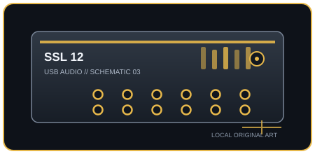

[ INDIVIDUAL COMPONENT // SOUND ]
Solid State Logic SSL 12
A four-preamp USB studio interface with ADAT expansion, monitor control, talkback, and Legacy 4K input processing.

IDENTIFICATION: Manufacturer/model: Solid State Logic SSL 12 USB audio interface. Verify the full model and hardware/firmware revision on the unit; similarly named generations may have different ports, drivers, or channel counts.
Specifications
| Catalog subcategory | USB audio interfaces |
|---|---|
| Model / SKU identity | Solid State Logic SSL 12 USB audio interface; model-level identity, not a retailer bundle SKU. |
| Analog, digital I/O and host channels | 12-in/8-out maximum with four analog mic/line inputs, optical ADAT input (up to 8 channels at 44.1/48 kHz), four balanced line outputs and two independent headphone outputs; four line outputs can be reconfigured for additional monitor/cue uses. MIDI DIN I/O. |
| Conversion, sample rate and bit depth | 32-bit AD/DA conversion; 44.1, 48, 88.2, 96, 176.4, or 192 kHz. ADAT channel availability falls as sample rate rises. |
| Mic preamps / phantom power | Four SSL mic preamps on combo inputs; +48 V phantom is selectable per input. Two front instrument inputs share the first two input channels; Legacy 4K is optional coloration. |
| USB generation / class compliance | USB-C connector; USB 2.0 protocol carries audio while USB 3.0-capable power is recommended for bus power. Class-compliant USB Audio operation is supported on macOS. The USB connector itself does not imply USB 3 data rate. |
Drivers, host compatibility & latency
- macOS uses Core Audio/class-compliant operation; Windows uses SSL USB ASIO/WDM drivers and SSL 360° software; the SSL compatibility note documents host requirements. Verify current OS versions and the driver package before connecting.
- SSL 360° supports low-latency monitoring and cue mixes, but DAW round-trip latency varies with host driver, buffer, sample rate, and session processing. Raise the buffer if crackles occur; ADAT capacity is rate-dependent.
- For predictable recording, match the interface and DAW sample rates, select the model-specific manufacturer driver where required, test the intended buffer under real session load, and retain a higher-buffer fallback for dense projects.
Identification and preservation notes
Photograph the underside model label and connector panel; record serial/model identifiers, revision, firmware, included power supply, optical mode, and installed driver version. Do not infer channel count or supported sample rate from a connector or product-family name alone.
Sources & further reading
- SSL — SSL 12 product pageManufacturer product overview and feature/specification reference.
- SSL Support — SSL 12 User GuideManufacturer compatibility note for USB class compliance and host-driver requirements.
Manufacturer documentation is the authority for exact revisions and supported hosts. Verify regional SKU and operating-system support against the physical unit.